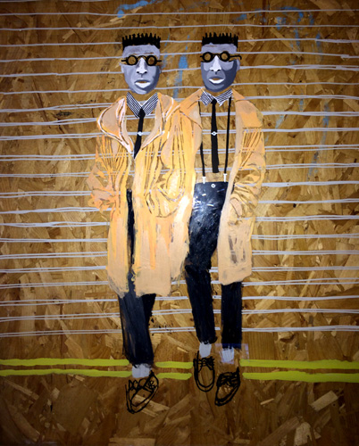
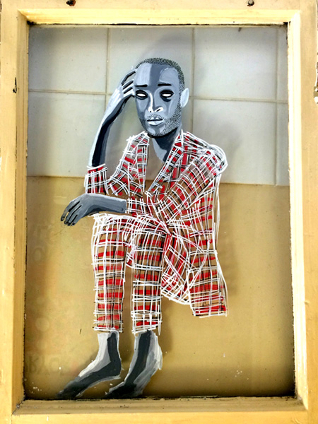

Barka
Eyes may be the window to the soul, but windows are the eyes to the art of 27 year old British and Jamaican artist Barka out of South London. Utilizing repurposed materials, most notably windows, Barka creates colorful portraits of people that are a slice of life - a woman taking a smoke break, a dapper fellow sitting in contemplation and an African security guard that exudes regality. The patterns and designs are done in such an intricate and whimsical fashion whether it be with paint or marker.
He is widely influenced by his travels and cultural experiences, and a lot of it spills over into his work. His recent art explorations have been working with glass and the relationship between images and words. The words accompany certain images to further the representation or underlying message. Having gone to school for both graphic design and typography it is easy to see why he would want to marry the two. If walls could talk, Barka’s would speak volumes.amfm: How did you get into making art? When did you realize you wanted to not simply be a person who made art as a child, but remain an artist as you grew up?
barka: Art is about confidence and self appreciation. My early memories of drawing the Teenage Mutant Ninja Turtles in nursery school aged three, and having my work placed on the wall, gave birth to that early form of gratitude, what all artists seek in a way. Education being my source of exploration, at each stage having work on the classroom walls, and then later during my college years expanded on that early confidence building exercise what we all seek. Encouragement was found among peers and appreciation by teachers or my audience for exploring new ideas, early on gave me the platform to grow with my art. But, with that all said, there was never a point in my life honestly where I can remember saying I want to be an artist, or I was an artist, art is an extension of me or 'I’' in expressing my feelings, allowing my mind to breath and my eyes to drift over an array of subjects matters in ones mind. We all have this nature as children in our development stages, with art being used to give children personal time in the week to reflect and communicate to ourselves or to one another using art. Not all art I produce is for a purpose, sometimes it’s just for me.
amfm: How has your work been molded by your experience? You said art is a feeling, how do you embody your work?
barka: Using my environment as an open space of exploration, a congested landscape that serves as the starting point for all my investigation. London being my initial playground and source of inspiration in the experimentation with materials, and traveling being my education into cultural forms of expressions. Ones culture is defined by ones art, and ones art defines ones confidence. The very nature in using societies undesired materials, indicate the innocence of a desire for acceptance, in defining one's identity and beauty through cultural expression. Only others can describe the feeling they get from my work, but I am honest in my expression which I feel is very evident in my work...that, I can say.amfm: What is the philosophy behind your work? Can you describe what you mean by description and representation? What are some the latest themes or ideas you have currently been exploring with your art?
barka: The philosophy of my work hinges primarily on the vernacular of beauty. Expression is found in the developmental process in both art and selfhood. I deal with the man in the mirror. Of late, my investigation has been on 'hair', in relation to the different forms of expressions used in identifying different ethnic groups, trends and tribes in the world. Hair often signifies wealth, or is used in perceptions of beauty and or a symbol of rebellion. One’s hair has naturally been used to express one’s cultural identity by all peoples of the world. My investigation being mainly through the African experience, being that, it shows more forms of diversity in its people than any other. I have explored colour in hair, in relation to the sun or in relation to dyes and their significance. Having the opportunity to travel to the Australian central desert and work with the aboriginal people, they naturally have blonde, copper or silver hair with jet black skin. Or Traveling to Kenya and understanding the use of hair as a source of rebellion with the Mau Mau peoples in Kenya, fighting the british during its colonial rule, their matted locks giving birth to the visual symbolism of the African warrior. Braids were once banded in Jamaica during its slavery era, the slaves using coded hair styles to convey messages of rebellions as they walked among each other, and there are many many more examples. Nothing is new under the sun, and everything has an origin.amfm: A lot of your work is done on repurposed/reclaimed materials, mostly glass. What intrigues you about working with this material?
barka: Yes of late, my experiments are mainly on glass, working on windows and glass doors. Windows are a symbol associated with the home, with work or places of importance in the religious aspect or wealth. Whether it be a stain glass window in a place of worship or a glass building in the city dealing in important finances, glass is a material that has advanced our livelihood in all things, and given birth to the man in the mirror. A playful material, with light being its partner in crime, shadows can dance as light passes through with glory and ease. Colour takes on a new meaning with glass, because in every brush stroke, you’re asking the question of whether light is to be used, and how much light do you wish to pass through the paint. Through the application process, questions will create endless possibilities with a material which is both brittle and strong. Glass is a magical material which open up rooms into ones imagination.amfm: Your work often includes both images and words to be read. You begged the question how can image and the written language exist in harmony? Can you answer your own question? How have you managed to find that harmony in your work?
barka: I have found that the harmony is often found with simple iconography, and a bold statement. If we look at the no smoking sign for instance, or other signs which attempted to enforce authority, almost often they are produced in black and white and one other colour. They are direct, the text doesn’t always have to be bold, where the action (the image), speaks louder than the word. The image or symbol in this example is aligning itself to our primitive state, something which is seen in children’s education in associating an image with a word. By using placid colours in my representation of the image and simple often naive words, my investigation is attempting to find that harmony with the descriptive and the representative aspect of my work. As one gets exposed to a language and in art, a visual language of an artist, ones starts to understand their story, or a familiarization is understood through their style. Great artist, or story tellers have this, as you start to identify and understand one’s language in their expression, and rich cultures ultimately possess this quality.amfm: what is your favorite word and why?
barka: My favourite word might be 'Bad'. A word I often used to signify good in my everyday language. The use and acceptance of the word coined in slang terms was flipped to mean good, or right, shows the simple innovation of perceptions and the contexts in word play. The origins of the word is in old English “baddel” meaning a 'womanish man' or hermaphrodite, a person or animal or plant having both male and female sex organs or other sexual characteristics, either abnormally or (in the case of some organisms) as the natural condition. Bad is a word which now still ironically means both sides of the coin, being a word that means wrong formally, but right informally with its use in slang.|  |  |
For more from Barka:
photo credits: barka